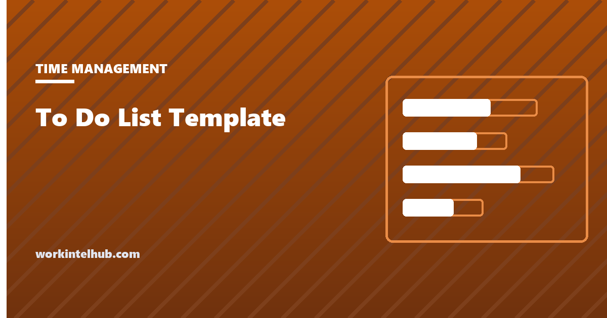

To Do List Template

A to-do list is the oldest productivity tool there is, and most of them fail the same way: they grow. Items are added faster than they are done, the list becomes a backlog, the backlog becomes a source of guilt, and the guilt makes the important items harder to start. The fix is not a better app. It is a layout with a cap, a rule for what gets on it, and a nightly moment when tomorrow's version is written.
The generator below prints a list in five layouts, each built around a different cap. The rest of the page explains when each layout suits, the four rules that keep a list working, and how to move from the daily list to the weekly plan without keeping two systems.
To-do list generator
Nothing typed here leaves your browser. Print gives you a paper version; Copy pastes into any notes app. The layouts are the five that survive contact with a real week.
The five layouts and when each fits
| Layout | Cap | Best for | Weak at |
|---|---|---|---|
| Simple checklist | None, which is the problem | Errands, packing, a shopping trip: lists that end | Work, where it grows without limit |
| Ivy Lee six, in order | Six, ranked | A working day with movable tasks; deciding where to start | Days with fixed time slots; reactive roles |
| 1-3-5 | Nine, by size | Days that mix one substantial piece of work with administration | Days with two big things |
| Priority quadrants | Ten across four boxes | Sorting a backlog; deciding what to drop | Daily use; the sorting is the work |
| Week at a glance | Three outcomes plus three a day | Seeing the week; assigning outcomes to days | The detail of any one day |
The Ivy Lee method and the Eisenhower matrix each have their own page with the reasoning; the weekly layout is the compact version of the weekly planner. Most people who keep the habit settle on two: a weekly view on Sunday and a six-item list each evening.
Four rules that stop a list becoming a backlog
- The list has a cap. Six, nine, ten: the number matters less than its existence. A capped list forces the choice that an open list defers, and the choosing is the work. Everything that does not make the cap goes to a separate "not now" list, which is reviewed weekly and mostly deleted.
- Every item is an action, not a project. "Write the report" is a project; "draft the introduction" is an action. Projects on a list get carried over indefinitely because they can never be ticked; actions get done. If an item has been carried over three days running, it is not an action.
- The list is written the evening before. Written in the morning it is written in the inbox's shadow, under pressure, and it starts with email. Written the night before it starts with the thing that matters and the morning has no decision to make.
- Anything under two minutes is done, not listed. David Allen's rule. The cost of tracking a tiny task exceeds the cost of doing it, and tiny tasks are what inflate lists.
A fifth rule is for the guilt. Items that were not done are not failures; they are information about the day. Move them, drop them, or break them down, and do not carry the list's history forward as a debt. The procrastination guide covers why the debt makes starting harder.
Paper, notes app or task app
Paper wins for the daily list: it is on the desk, it cannot notify you, it has a natural cap (the page), and crossing an item out is a small, real reward. A notes app wins for capture, because ideas arrive away from the desk. A task app wins for recurring items and for anything shared with other people. The failure mode is trying to make one of them do all three: the task app becomes a backlog of four hundred items, and the daily six are lost in it.
The practical arrangement is capture anywhere, then a nightly transfer of tomorrow's six to paper or to a single pinned note. The four hundred stay in the app, sorted monthly with the quadrant layout, and mostly deleted. The time management tools page sorts the apps by the problem they solve, if the choice of app is the question.
Key takeaways
- To-do lists fail by growing. The fix is a layout with a cap, a rule for what gets on, and a nightly rewrite.
- Simple checklists suit lists that end; for work use a capped layout: Ivy Lee six, 1-3-5, quadrants or the weekly view.
- Every item is an action, not a project. Three days of carry-over means it needs breaking down.
- Write tomorrow's list the evening before, and do anything under two minutes instead of listing it.
- Capture anywhere, transfer the day's six to paper or one pinned note, and keep the backlog in the app where it can be sorted and deleted.
- Undone items are information, not debt. Move, drop or break them down.
Frequently asked questions
What is the best to-do list format?
For a working day, a capped list: six items in priority order (Ivy Lee) or one big, three medium and five small (1-3-5). Simple open-ended checklists suit lists that end, such as errands, and grow without limit when used for work. A weekly view for outcomes plus a daily capped list is the combination most people keep.
How many items should be on a to-do list?
Six to nine for a day. The cap forces the choice about what matters, and a day rarely holds more than that once meetings and interruptions are counted. Everything else goes on a separate list that is reviewed weekly.
Should I write my to-do list at night or in the morning?
The evening before. Written in the morning, the list is shaped by the inbox and starts with email; written the night before, it starts with the task that matters and removes the morning's decision. The Ivy Lee method is built around this step.
What is the 1-3-5 rule?
A daily list sized by task weight: one big task, three medium and five small, nine in total. It stops a list from being nine large things and suits days that mix one substantial piece of work with administration. The generator on this page labels the slots.
Why do I never finish my to-do list?
Usually because it has no cap, its items are projects rather than actions, or it is written in the morning under the inbox's influence. Cap it, break items into single actions, write it the night before, and treat undone items as information about the day rather than a debt carried forward.
Is a paper to-do list better than an app?
For the daily list, paper usually wins: it sits on the desk, cannot notify you, has a natural cap and rewards crossing out. Apps win for capturing ideas away from the desk, recurring tasks and shared work. Use both: capture in the app, transfer the day's list to paper each evening.